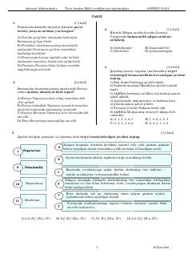

TF9-sinf jahon tarixi fanidan milliy sertifikat test topshiriqlari to'plami.
Ushbu qo'llanma 9-sinf jahon tarixi fanidan milliy sertifikat imtihonlariga tayyorgarlik ko'rish uchun mo'ljallangan test topshiriqlarini o'z ichiga oladi. Kitobda turli tarixiy davrlar, atamalar, xronologik ketma-ketliklar va tarixiy shaxslarga oid test savollari berilgan bo'lib, o'quvchilarning bilimini sinovdan o'tkazishga yordam beradi.